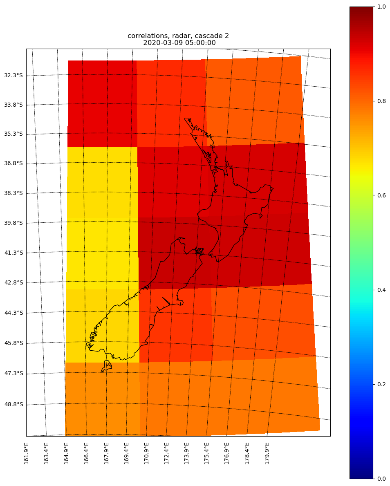
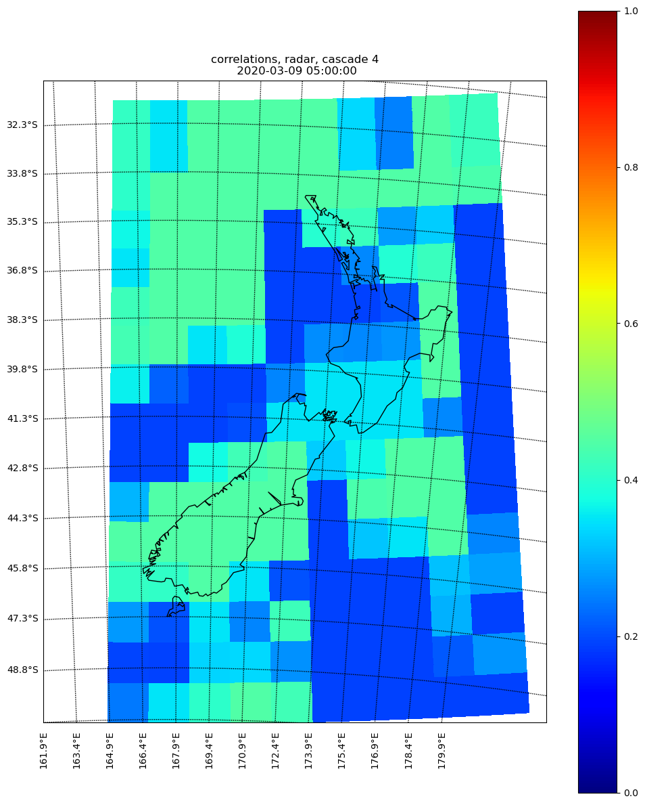
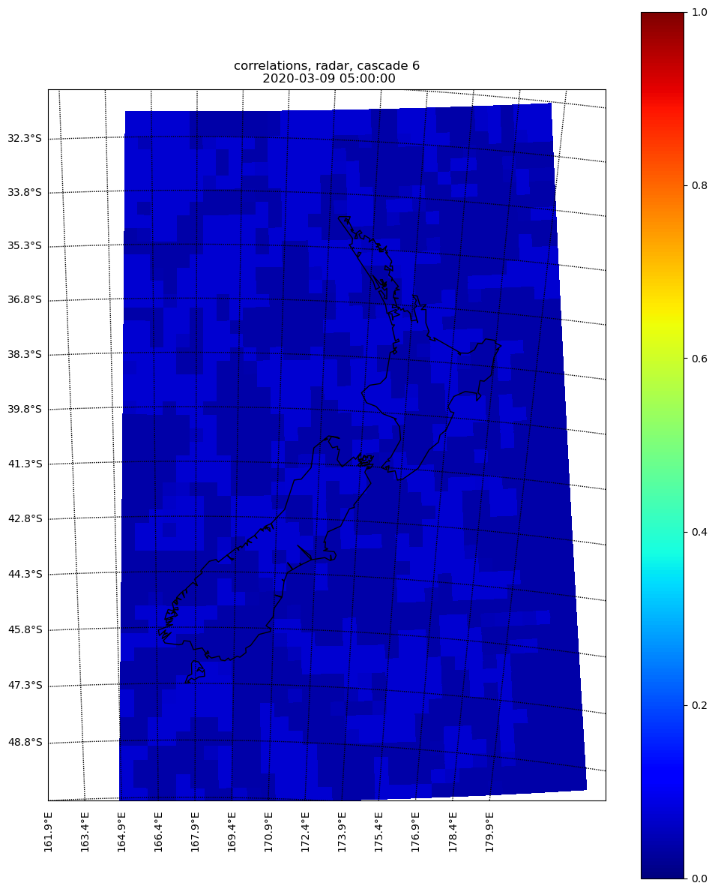

Calculate the correlation for radar at T0¶
The skills of radar extrapolation must be calculated at the analysis time.
Temporal correlation¶
Using correlations¶
First the temporal correlation is estimated, from the previous section, we know that all the data in R_radar_ are valid at the same time, while besides R_radar[-1, :, :], all the rests are extrapolated forecasts:
rho_radar_tmp = correlation.temporal_autocorrelation(
R_radar_, MASK=MASK_thr)
rho_radar_tmp = [0.9798, 0.9583]
Using FSS¶
The good thing of using FSS instead of correlation is that one can collect all the FSS parameters over previous cases, and come up with a more statistically stable skill. However, a threshold must be provided to generate the FSS score, here we use a pre-defined ratio of the maximum (use_fss[‘thres_as_max_ratio’]) value as the threshold
For the initial skill of radar (at T0), we usually go back 12 hours to collect the FSS parameters and use them to create the FSS score:
rho_radar_tmp = raincast_fss.temporal_autocorrelation_fss(
cascade_num, int(cascade_grid[cascade_num]), R_radar_,
use_fss['thres_as_max_ratio'], use_fss['grids'],
hist_cli_dir, use_fss['use_hist_fss_para'],
raincast_time.strftime('%Y%m%d%H%M'), float(timestep))
rho_radar_tmp = [0.9229, 0.8935]
For example rho_radar_tmp[0] is the skill from R_radar[-2, :, :] (1 hour extrapolation), and rho_radar_tmp[1] is the skill from R_radar[-3, :, :] (2 hour extrapolation)
Spatial correlation¶
Since the skill of radar extrapolation is not constant over the entire domain, the spatial correlation is applied. It is constrained by the temporal correlation we estimated at the last step (here we can consider that the temporal correlation is the domain average correlation):
for i in range(n_cascade_levels):
if run_in_parallel:
dask_jobs.append(
dask.delayed(_get_rho)(
i, R_radar_cascades, ar_order, use_fss, cascade_grid,
hist_cli_dir, raincast_time, timestep,
MASK_thr, spatial_corr, kmperpixel))
else:
rho_radar[i, :, :, :] = _get_rho(
i, R_radar_cascades, ar_order, use_fss, cascade_grid,
hist_cli_dir, raincast_time, timestep,
MASK_thr, spatial_corr, kmperpixel)
if run_in_parallel:
dask_out = dask.compute(*dask_jobs, scheduler='multiprocessing')
for i in range(n_cascade_levels):
rho_radar[i, :, :, :] = dask_out[i]
The correlations for radar have to be calculated over all cascades and all goback hours. At the same time we also need to adjust the radar rho to make the AR model stable (from STEPS codes).
Here are the examples (2 hrs extrapolation, with cascades 2, 4 and 6) of the spatial correlation over different cascades, we noticed that the extrapolation scheme has little skill over small scales:
  {kind=link}
{kind=link}
{kind=link}
The full gallery can be found here radar correlation gallery. Note that the output rho_radar has the dimension of (cascades, time, x, y), the first time (e.g., rho_radar[cascades, 0, x, y]) indicates the most recent extrapolation (e.g., t-1h).
Note that it does not matter whether the temporal correlation is computed through correlation or FSS, the sptail correlation is always carried out using the correlation index.